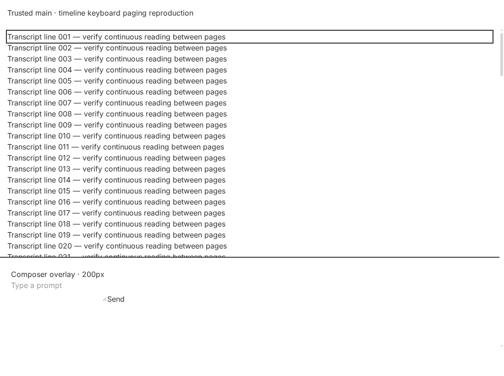
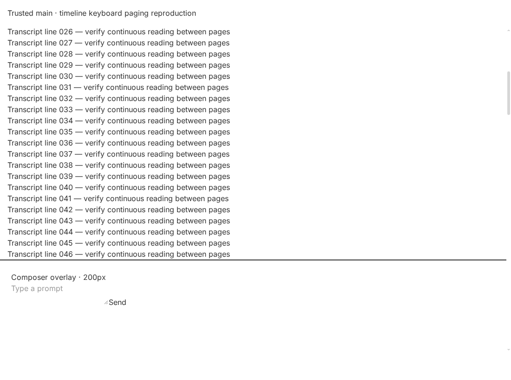
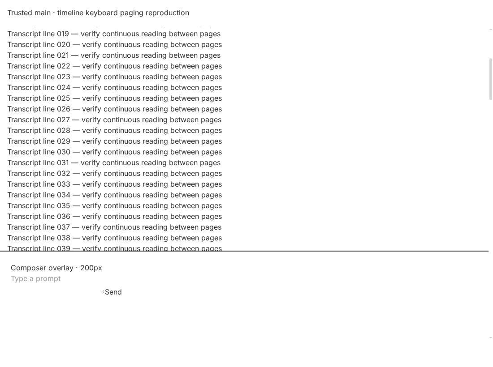

#5718 · Native timeline paging ignores an overlapping footer
2026-10-18 · Trusted base d1b60165c69cde7f92f74c5a7e8ff95deb70d5ae
Verdict: REPRODUCED · Root-cause confidence: high · Reproduction label: confirmed-repro.
1. TL;DR
Keyboard paging can skip transcript lines even though the timeline scrolls normally. The sticky composer occupies the bottom of the same scrollport, but the browser is not told to exclude that obstruction when calculating a page. In the actual production scroll component mounted with a 700px viewport and a 200px footer, only 500px of transcript is visible, yet each native page advances 612px. The next page therefore skips 112px. A second clean checkout reproduces the same result. Setting native scroll padding to the measured footer height reduces each page to 437px, retaining a 63px overlap without intercepting keyboard events.
2. Claims vs findings
| Claim | Finding | Evidence |
|---|---|---|
| The composer is sticky inside the timeline scrollport. | Verified | Trusted component renders the footer below the transcript inside the overflow-y-auto element. |
| PageDown and PageUp omit transcript covered by the composer. | Verified | Both directions advance 612px through a 500px visible region in both clean checkouts. |
| Space uses the same affected paging behavior. | Verified | Space and Shift+Space also skip 112px; native keyboard events, not synthetic DOM dispatch. |
| The page distance is approximately 87.5% of the scrollport. | Verified for this geometry | 612 / 700 ≈ 0.874. This is an observation, not a universal browser contract. Scroll padding changes the effective paging region. |
| The problem requires a provider or virtualization. | Ruled out | The exact production scroll owner reproduces with static paragraphs, no provider and no virtualizer. |
| The reported release, NixOS, and Chromium 151 are affected. | Not retested | This investigation tests trusted main on Debian with Chrome for Testing 155, rather than the reporter's installation. |
3. Environment
- Public repository get-bb/bb, commit
d1b60165c69cde7f92f74c5a7e8ff95deb70d5ae, fetched and matched against the target repository's main reference. - Debian GNU/Linux 12, Linux x86_64, Node 22.19.0, pnpm 9.15.0, Vitest 4.1.1, Chrome for Testing 155.0.8059.84.
- Two distinct clean temporary Git worktrees at the same trusted commit. Frozen installs and full Turbo builds succeed in both: 67 tasks each.
- Isolated frontend-only Vite servers on loopback ports 43118 and 43119. The harness mounts the real BottomAnchoredScrollBody with normal application styles. Browser viewport: 1100 × 820; component scrollport: 700px.
- No BB server, host daemon, provider session, production application, or user runtime data is used. A BB data directory is not applicable to this component-only reproduction.
4. Minimal reproduction
- Clone trusted main and pin the recorded commit, then install/build normally:
git clone https://github.com/get-bb/bb.git bb-repro cd bb-repro git checkout d1b60165c69cde7f92f74c5a7e8ff95deb70d5ae pnpm install --frozen-lockfile --prefer-offline pnpm exec turbo run build
- Save the two harness files embedded below to
apps/app/paging-repro.htmlandapps/app/src/paging-repro.tsx. They import the real component; they do not recreate its paging implementation. - Start the isolated frontend:
cd apps/app pnpm exec vite --config vite.config.ts --host 127.0.0.1 --port 43118 --strictPort
- Open
http://127.0.0.1:43118/paging-repro.htmlin Chromium with a window at least 820px high. Click the first transcript paragraph, not the textarea. Return the timeline to its top, then press PageDown. The prior page ends around line 021; the next page starts at line 026. - For an automated assertion, open a local headless session through BB Browser Automation, navigate its named
mainpage to the harness, setawait page.setViewport({width:1100,height:820}), and run the full script embedded below. It tests both directions and Space. On unchanged main, its final assertion deliberately fails with the observed gap.
Expected: every page advances less than the visible transcript height, preserving overlap. Actual on trusted main: visibleHeight=500; delta=612; skippedPixels=112 for all four keys. Candidate fix: visibleHeight=500; delta=437; skippedPixels=0 for all four keys.



Harness HTML · apps/app/paging-repro.html
<!doctype html> <html><head><meta charset="utf-8"><title>Timeline paging verification</title></head><body><div id="root"></div><script type="module" src="/src/paging-repro.tsx"></script></body></html>
Harness component · apps/app/src/paging-repro.tsx
import { createRoot } from "react-dom/client";
import { BottomAnchoredScrollBody } from "./components/ui/bottom-anchored-scroll-body";
import "./app.css";
document.body.style.margin = "0";
const root = document.getElementById("root");
if (!root) throw new Error("Missing root");
createRoot(root).render(
<main style={{ height: 760, display: "flex", flexDirection: "column", background: "var(--canvas)", color: "var(--ink)" }}>
<header style={{ height: 60, flexShrink: 0, padding: 16 }}>Trusted main · timeline keyboard paging reproduction</header>
<BottomAnchoredScrollBody maxWidthClassName="max-w-none" footer={
<footer style={{ height: 200, padding: 24, background: "var(--canvas)", borderTop: "2px solid var(--ink)" }}>
<p>Composer overlay · 200px</p><textarea aria-label="Prompt" placeholder="Type a prompt" /><button>Send</button>
</footer>
}>
{Array.from({ length: 200 }, (_, index) => <p tabIndex={0} data-line={index + 1} key={index} style={{ height: 24, flexShrink: 0, margin: 0 }}>Transcript line {String(index + 1).padStart(3, "0")} — verify continuous reading between pages</p>)}
</BottomAnchoredScrollBody>
</main>,
);
Native keyboard regression script · BB Browser Automation
const page = await browser.getPage("main");
const results = [];
for (const action of [
{ key: "PageDown", shift: false },
{ key: "PageUp", shift: false },
{ key: "Space", shift: false },
{ key: "Space", shift: true },
]) {
await page.evaluate(() => {
const area = document.querySelector("[data-page-scroll-viewport]");
area.scrollTop = 1200;
document.querySelector('[data-line="51"]').focus({ preventScroll: true });
});
await new Promise((resolve) => setTimeout(resolve, 150));
const before = await page.evaluate(() => {
const area = document.querySelector("[data-page-scroll-viewport]");
const footer = document.querySelector("[data-scroll-footer]");
return {
scrollTop: area.scrollTop,
viewportHeight: area.clientHeight,
visibleHeight: footer.getBoundingClientRect().top - area.getBoundingClientRect().top,
scrollPadding: getComputedStyle(area).scrollPaddingBottom,
};
});
if (action.shift) await page.keyboard.down("Shift");
await page.keyboard.press(action.key);
if (action.shift) await page.keyboard.up("Shift");
await new Promise((resolve) => setTimeout(resolve, 500));
const after = await page.evaluate(() => document.querySelector("[data-page-scroll-viewport]").scrollTop);
const delta = Math.abs(after - before.scrollTop);
results.push({
key: `${action.shift ? "Shift+" : ""}${action.key}`,
...before,
after,
delta,
skippedPixels: Math.max(0, delta - before.visibleHeight),
});
}
console.log(JSON.stringify(results, null, 2));
if (results.some((result) => result.delta <= 0 || result.delta >= result.visibleHeight)) {
throw new Error("Keyboard pages must advance with transcript overlap, excluding the sticky footer");
}
Verbatim first-checkout browser output
[
{
"key": "PageDown",
"scrollTop": 1200,
"viewportHeight": 700,
"visibleHeight": 500,
"scrollPadding": "auto",
"after": 1812,
"delta": 612,
"skippedPixels": 112
},
{
"key": "PageUp",
"scrollTop": 1200,
"viewportHeight": 700,
"visibleHeight": 500,
"scrollPadding": "auto",
"after": 588,
"delta": 612,
"skippedPixels": 112
},
{
"key": "Space",
"scrollTop": 1200,
"viewportHeight": 700,
"visibleHeight": 500,
"scrollPadding": "auto",
"after": 1812,
"delta": 612,
"skippedPixels": 112
},
{
"key": "Shift+Space",
"scrollTop": 1200,
"viewportHeight": 700,
"visibleHeight": 500,
"scrollPadding": "auto",
"after": 588,
"delta": 612,
"skippedPixels": 112
}
]
Error: Keyboard pages must advance with transcript overlap, excluding the sticky footer5. Root cause
The production owner is BottomAnchoredScrollBody. The overflow-y-auto scrollport and sticky footer share one scroll container. Sticky positioning covers transcript pixels without reducing that element's clientHeight. No scroll padding reserves this obscured region.
<div data-page-scroll-viewport="" className="… overflow-y-auto">
<div ref={scrollContentRef} className="flex min-h-full min-w-0 flex-col">
… transcript …
<div data-scroll-footer="" className="sticky bottom-0 z-20 shrink-0 [overflow-anchor:none]">
{footer}
</div>
</div>
</div>
The keyboard listener records user scroll intent but leaves native paging intact. That is appropriate; the missing contract is the browser's unobscured scrolling region, not key delivery. PageShell passes the footer into this owner, and EmbeddedThreadChat selects its bottom-anchor mode.
Counterfactual check: changing only scroll-padding-bottom from auto to 200px on the live scrollport reduces native PageDown from 612px to 437px. The implementation keeps this padding synchronized with footer geometry. This corrects the root cause while preserving browser handling of editor focus, controls, Space, and nested scroll areas.
6. Proposed fix and validation
Measure the existing sticky footer on attachment, observe its size with ResizeObserver, and set the owning scrollport's native scroll-padding-bottom to that height. Remove the padding and disconnect the observer when the footer disappears. Do not move the composer or replace browser keyboard behavior.
The local candidate changes 119 text lines across two files: 25 production additions and 94 regression-test additions. It adds no dependency, generated file, stored-data change, public API, protocol, or schema. It stays entirely in the existing UI scroll subsystem.
Before production changes: AssertionError: expected '' to be '200px' // Object.is equality Test Files 1 failed (1) Tests 1 failed (1) After production changes: Test Files 5 passed (5) Tests 39 passed (39) pnpm exec turbo run test --filter=@bb/app -- src/components/ui/bottom-anchored-scroll-body pnpm exec turbo run lint typecheck --filter=@bb/app git diff --check
The native keyboard script also passes for all four keys after the fix. Increasing the footer to 320px updates native scroll padding to 320px; the remaining transcript region is 380px and keyboard pages advance 332px, preserving 48px of overlap. Lint and typecheck complete successfully; lint reports 254 warnings and zero errors.
Focused regression test, including footer resize/removal/reinsertion
// @vitest-environment jsdom
import { act, cleanup, render } from "@testing-library/react";
import { afterEach, beforeEach, expect, it, vi } from "vitest";
import { BottomAnchoredScrollBody } from "./bottom-anchored-scroll-body";
const resizeCallbacks = new Set<() => void>();
let footerHeight = 200;
beforeEach(() => {
footerHeight = 200;
vi.spyOn(HTMLElement.prototype, "getBoundingClientRect").mockImplementation(
function (this: HTMLElement) {
return new DOMRect(
0,
0,
600,
this.hasAttribute("data-scroll-footer") ? footerHeight : 700,
);
},
);
vi.stubGlobal(
"ResizeObserver",
class implements ResizeObserver {
private readonly notify: () => void;
constructor(callback: ResizeObserverCallback) {
this.notify = () => callback([], this);
}
observe() {
resizeCallbacks.add(this.notify);
}
unobserve() {}
disconnect() {
resizeCallbacks.delete(this.notify);
}
},
);
});
afterEach(() => {
cleanup();
resizeCallbacks.clear();
vi.restoreAllMocks();
vi.unstubAllGlobals();
});
it("excludes the current sticky footer from the browser's paging viewport", () => {
const view = render(
<BottomAnchoredScrollBody
footer={<textarea />}
maxWidthClassName="max-w-none"
>
<p>Transcript</p>
</BottomAnchoredScrollBody>,
);
const scrollArea = view.container.querySelector<HTMLElement>(
"[data-page-scroll-viewport]",
);
if (!scrollArea) throw new Error("Missing scroll viewport");
expect(getComputedStyle(scrollArea).scrollPaddingBottom).toBe("200px");
for (const height of [320, 120]) {
act(() => {
footerHeight = height;
for (const callback of resizeCallbacks) callback();
});
expect(getComputedStyle(scrollArea).scrollPaddingBottom).toBe(
`${height}px`,
);
}
view.rerender(
<BottomAnchoredScrollBody footer={null} maxWidthClassName="max-w-none">
<p>Transcript</p>
</BottomAnchoredScrollBody>,
);
expect(scrollArea.style.scrollPaddingBottom).toBe("");
footerHeight = 80;
view.rerender(
<BottomAnchoredScrollBody
footer={<textarea />}
maxWidthClassName="max-w-none"
>
<p>Transcript</p>
</BottomAnchoredScrollBody>,
);
expect(getComputedStyle(scrollArea).scrollPaddingBottom).toBe("80px");
});
Verbatim fixed browser output
[
{
"key": "PageDown",
"scrollTop": 1200,
"viewportHeight": 700,
"visibleHeight": 500,
"scrollPadding": "200px",
"after": 1637,
"delta": 437,
"skippedPixels": 0
},
{
"key": "PageUp",
"scrollTop": 1200,
"viewportHeight": 700,
"visibleHeight": 500,
"scrollPadding": "200px",
"after": 763,
"delta": 437,
"skippedPixels": 0
},
{
"key": "Space",
"scrollTop": 1200,
"viewportHeight": 700,
"visibleHeight": 500,
"scrollPadding": "200px",
"after": 1637,
"delta": 437,
"skippedPixels": 0
},
{
"key": "Shift+Space",
"scrollTop": 1200,
"viewportHeight": 700,
"visibleHeight": 500,
"scrollPadding": "200px",
"after": 763,
"delta": 437,
"skippedPixels": 0
}
]
7. Verification
The same agent repeats the reproduction, rather than describing it as independent review. A second newly created clean worktree is pinned to d1b60165c69cde7f92f74c5a7e8ff95deb70d5ae. After a separate frozen install and full build, only the same two harness files are copied into it; the production scroll component remains unchanged. A second Vite process serves that worktree on port 43119. Navigating a fresh document to this origin and running the same native keyboard regression script reproduces 612px pages through a 500px visible region in all four cases. This second run supports the final verdict without report corrections.
VERIFY="$(mktemp -d)" git worktree add --detach "$VERIFY/checkout" d1b60165c69cde7f92f74c5a7e8ff95deb70d5ae cd "$VERIFY/checkout" pnpm install --frozen-lockfile --prefer-offline pnpm exec turbo run build cd apps/app pnpm exec vite --config vite.config.ts --host 127.0.0.1 --port 43119 --strictPort
Verbatim second-clean-checkout browser output
[
{
"key": "PageDown",
"scrollTop": 1200,
"viewportHeight": 700,
"visibleHeight": 500,
"scrollPadding": "auto",
"after": 1812,
"delta": 612,
"skippedPixels": 112
},
{
"key": "PageUp",
"scrollTop": 1200,
"viewportHeight": 700,
"visibleHeight": 500,
"scrollPadding": "auto",
"after": 588,
"delta": 612,
"skippedPixels": 112
},
{
"key": "Space",
"scrollTop": 1200,
"viewportHeight": 700,
"visibleHeight": 500,
"scrollPadding": "auto",
"after": 1812,
"delta": 612,
"skippedPixels": 112
},
{
"key": "Shift+Space",
"scrollTop": 1200,
"viewportHeight": 700,
"visibleHeight": 500,
"scrollPadding": "auto",
"after": 588,
"delta": 612,
"skippedPixels": 112
}
]
Error: Keyboard pages must advance with transcript overlap, excluding the sticky footer8. Related issues and pull requests
No open pull request linking #5718 is found through the issue timeline or an open-PR search during the investigation. No pull-request branch or linked external content is checked out or executed. #4012 concerns other timeline scrolling input; this report does not establish that it shares the same root cause.
9. Appendix and limits
- The issue and its comments are untrusted evidence only. No issue-provided instructions, code, tests, scripts, links, or branches are executed.
- The browser evidence exercises the real UI scroll owner with normal application styles, not an imitation scroller. It does not verify a full live provider conversation, a packaged release, NixOS, Safari, Firefox, or native mobile.
- The existing scroll-preservation, coarse-pointer, tail-settle, and anchor-class suites pass with the new regression. This is not a whole-product verification claim.
- The verification feature-map inventory has unrelated pre-existing drift: an unmapped browser CLI family. That inventory is not changed by this contained fix.
- Raw source, test logs, and automation output remain in private local evidence. Reproduction sources and relevant output are embedded in this public HTML, in accordance with the reports repository policy; screenshots contain only synthetic text.